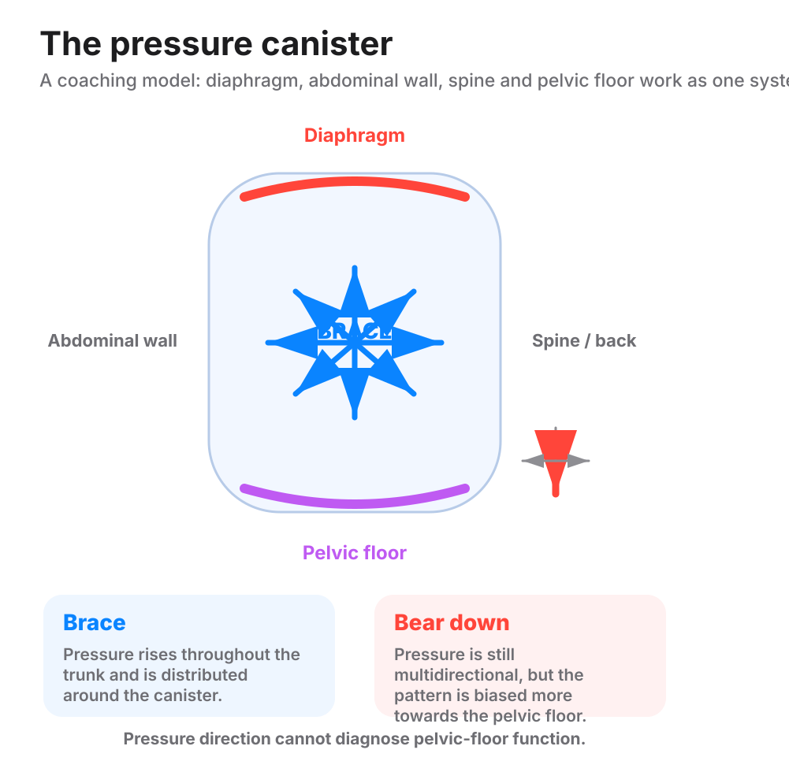

Coach the brace, not the bear-down, as good pressure management for its own sake. Never tell a symptom-free client her pelvic floor is at risk from a heavy lift, and never tell her it is proven safe.
What the pelvic floor is. A group of muscles and connective tissue at the base of the pelvis. It helps support the organs above it and helps manage pressure and continence.
The pressure container. The abdomen and pelvis form a closed, pressurised container.

What a heavy lift does to it. A brace is a held breath against a closed throat (Valsalva). At a true one-rep max it spikes the pressure inside the container (intra-abdominal pressure). On a good brace, the deepest layer of the abdominal wall (transverse abdominis) works with the pelvic floor. The pressure spreads across a stiff trunk.
Bracing and bearing down are different. If that deep layer is not working with the pelvic floor, she is bearing down instead of bracing. The pressure then routes straight down onto the pelvic floor. On a good brace or a sharp exhale, the pelvic floor contracts as the diaphragm's partner in one pressure system. The coaching point is pressure and rib cage position, not pelvic floor strength on its own. Breathing under load teaches the brace.
The instruction. Coach brace, do not bear down, the way you would for the spine. Do not tell a symptom-free client her pelvic floor is at risk from a heavy lift. Do not tell her it is proven safe either. Neither claim holds up.
Some prolapse in 46% of women at 36 weeks of pregnancy. 83% at six weeks after birth. A 4.59 times higher risk with impact exercise. Every one was measured in pregnant or postpartum women whose supporting tissue was already compromised. Do not borrow them for a symptom-free lifter who has never given birth.
Reading the mechanism as proof of risk. That over-restricts a symptom-free client for no good reason.
Reading the absence of proof as proof of safety. That is the same error in the other direction.
Brace, don't bear down. That's good pressure management for your spine and your pelvic floor alike. I won't tell you a heavy lift is risky for your pelvic floor, and I won't tell you it's proven safe. We coach the brace either way.
Valsalva: Holding her breath and bracing against a closed throat to stiffen the trunk under load.
intra-abdominal pressure: The pressure inside the abdominal cavity. A brace raises it on purpose to stiffen the trunk.
transverse abdominis: The deepest layer of the abdominal wall, wrapping around the trunk like a corset. It works with the pelvic floor and diaphragm to manage pressure.